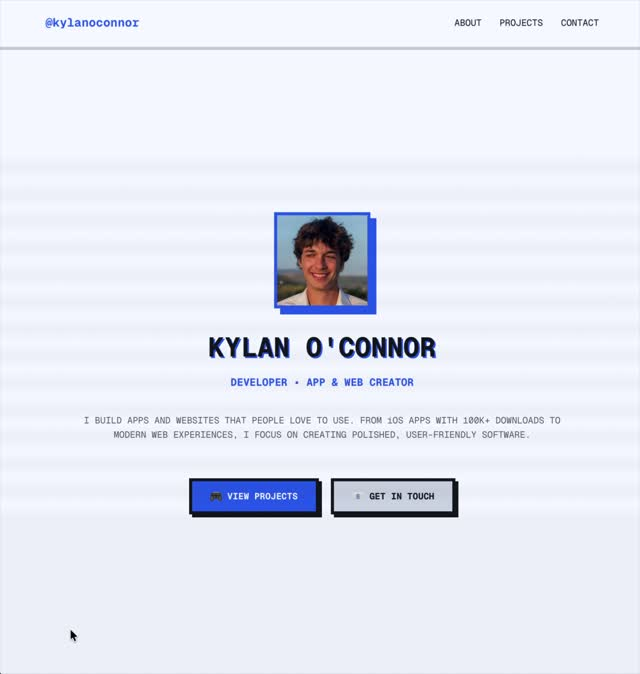
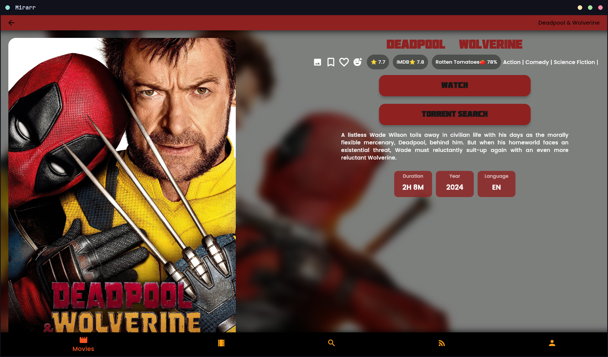

Showcases Catalog
Hand-picked open source releases and developer utilities, ordered descending from latest release.

Runtipi: One-Click Homeserver
A Docker homeserver orchestrator with one-command setup and a web dashboard for one-click installs across a huge self-hosted app library.

Face Looker: Cursor-Following Face Grids
Generate an AI gaze grid from a single portrait, then drop in a React hook that swaps frames so the face follows the cursor — portfolio headers, avatars, and interactive UI in one pipeline.

yoinks: Terminal Video Downloader
Download video from YouTube, X, Instagram, TikTok, and 1,800+ sites through a full-screen Ink terminal UI. Paste a URL, pick a resolution or audio-only MP3, and save — no popups, no fake buttons, no shady redirects.

UniClipboard: Encrypted Clipboard Sync
Real-time clipboard sync across Windows, macOS, and Linux — peer-to-peer with end-to-end encryption, encrypted relay fallback, and no cloud account. Sync text, images, and files with searchable local history.

Pixel Snapper: AI Pixel Art Grid Fix
A Rust tool that snaps inconsistent AI-generated pixel art to a perfect grid with palette quantization. Available as CLI, WASM module, and web app — batch-process sprites or embed in your own pipeline.

Idle Fantasy: Offline Idle RPG
A free, open-source Android idle RPG with 23 skills, 20 dungeons, and 170+ quests. Train while the app is closed, collect loot on return — no internet, no account, no ads, and no stamina bar.

Mouzi: Downloads Folder Organizer
A privacy-first Tauri app that lives in the system tray and automatically sorts Downloads (and any watched folder) by customizable rules. 100% offline, ~5 MB RAM, with undo history and Google Takeout import.
systemd → pm2 → node (pid 14233)
Source: pm2 · 127.0.0.1:5001
Witr: Why Is This Running?
A Go CLI that traces processes, ports, containers, and file locks back to their causal chain — who spawned what, through which supervisor, and why it exists right now. Includes an interactive TUI with live process, port, and container dashboards.


Deface: Video Face Anonymization
A Python CLI that detects faces in videos and photos, then applies blur, black boxes, or mosaic filters to each region automatically. Batch entire directories, tune detection thresholds, or run a live webcam demo — with optional GPU acceleration via ONNX Runtime.

Tork: Terminal Torrent Client
A keyboard-driven Go CLI for searching torrent indexes, ranking swarms, and managing downloads from one TUI. Includes a built-in browser for official Linux ISOs and local health checks via tork doctor.

Ternlight: On-Device Embeddings
A WebAssembly embedding engine that ships model, tokenizer, and SIMD inference in a single 5–7 MB bundle. Embed text on CPU in milliseconds — semantic search with no API calls, no GPU, and no data leaving the device.

QR Code Styling: Branded QR Generator
A client-side JavaScript library for generating styled QR codes with embedded logos, custom dot shapes, and gradient fills. Export to canvas or SVG — no backend or third-party API required.

Frame: Native FFmpeg GUI
A Rust desktop app for FFmpeg media conversion with a GPUI interface. Granular control over video, audio, subtitle, and metadata streams — backed by a reusable conversion core with probing, validation, and live progress parsing.
10,000 → 2,500 tokens (-75%)
rtk: LLM Token Compression Proxy
A single Rust binary that sits between your shell and coding agents, filtering command output before it hits the context window. Cuts token usage 60–90% on git, test, lint, and filesystem commands with under 10ms overhead.

autobrr: Download Automation Hub
Modern torrent and Usenet automation with real-time IRC indexer monitoring. Filter-driven workflows that push releases to qBittorrent, Radarr, Sonarr, or watch folders the moment they drop.

mapcn: React Map Components
Free, open-source map components for React built on MapLibre GL. shadcn/ui-compatible, theme-aware, and installable with a single CLI command — markers, routes, and controls included.

omaTUNES: Native Wayland Music Player
A lightweight Rust music player for Hyprland and Omarchy rices. Local-library playback with live theme sync — no streaming services, no cloud dependencies, minimal resource footprint.
847 files saved · archive deduped
gallery-dl: Universal Gallery Downloader
A cross-platform CLI that downloads image galleries and collections from hundreds of hosting sites. Deep JSON configuration, programmable filenames, and cookie or OAuth authentication for private content.

httpSMS: Android SMS Gateway API
Turn your Android phone into a programmable SMS gateway. Send messages via a REST API, receive inbound texts through webhooks, and self-host the full stack when virtual numbers are not an option.

Screenshot.rocks: Device Mockup Generator
An open-source web app that wraps raw screenshots in polished browser and mobile device frames. One-click browser extensions for Chrome, Firefox, and Edge, plus a self-hostable codebase.
snapshot saved · encrypted & deduplicated
restic: Secure Incremental Backups
A single-binary backup program with client-side encryption, content-defined deduplication, and native support for S3, SFTP, B2, Azure, and dozens more backends via rclone.
→ https://myapp.localhost
portless: Named Local Dev URLs
A local dev proxy that swaps ephemeral port numbers for stable, memorable hostnames. HTTPS with HTTP/2, monorepo routing, and agent-friendly environment variables — zero config to start.
Podroid: Rootless Linux VM for Android
A rootless Android app that boots a real Alpine Linux virtual machine — not a chroot workaround. Run Podman, Docker, and LXC containers, SSH in from a laptop, and launch GUI desktop apps from your phone.
Boneyard: Headless Skeleton Generator
An offline-first loader framework that automatically extracts pixel-perfect skeleton screens from your real UI layout at build time, with zero production runtime layout measurements.
ZenNotes: Local Markdown Workspace
A keyboard-first notes manager built on local Markdown files. Integrates Vim motions, multi-runtime desktop/web builds, plain-text CSV databases, and a native Model Context Protocol (MCP) server.

ffmpeg-webCLI: Local Video Editor
A browser-based video converter and operations dashboard powered by FFmpeg WebAssembly. Process operations (trim, rotate, crop, compress) entirely inside your browser with absolute privacy.

Mirarr: FOSS Movie Client
A clean, native, and platform-agnostic client designed to query and manage media watchlists. Runs natively on Android, iOS, Windows, and Linux with full privacy and zero telemetry tracking.